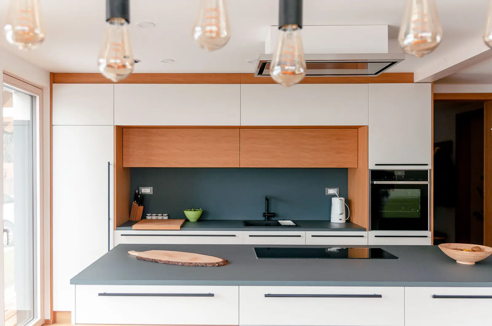
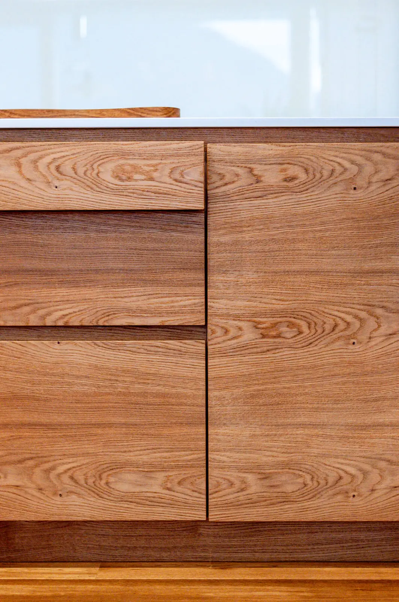

Izdelava pohištva po meri za najbolj zahtevne. Oblikujemo prostor, ki vam je pisan na kožo.
Zakaj izbrati nas?Vsak dom je na svoj način edinstven.

V podjetju Pohištvo Jereb vam omogočamo, da uresničite želje in ustvarite idealno pohištvo po meri vašega doma. Vemo, da je vsak dom na svoj način edinstven, kar lahko oteži opremljanje.
Zato vas vodimo skozi celoten postopek in poskrbimo, da se pri vsaki odločitvi počutite samozavestno. Pohištvo po meri skrbno načrtujemo in oblikujemo tako, da povečamo uporabne površine za odlaganje, shranjevanje in udobje.
Oblikujemo prostor, ki vam je pisan na kožo.«Pohištvo JerebVeč o nas →
Izpostavljeno · detajlLes, ukrivljen v vogal.
Posvečamo posebno pozornost majhnim detajlom, vašo idejo nadgradimo in ustvarimo mojstrovino, ki ni le lepa, ampak tudi funkcionalna.«Pohištvo JerebGalerija detajlov · 29 fotografij →


ProgramZa vsak prostor vašega doma.
Kako delamoDovršeno, edinstveno in uporabno.
Posvet s strokovnjakom Naša strokovna ekipa z znanjem in izkušnjami iz mizarske industrije vam pomaga izbrati oblike, materiale in barve, najprimernejše za vaš dom.
3D izris Po začetnem posvetu se ekipa loti natančnega oblikovanja. Za lažjo predstavo in umestitev elementov v prostor pripravimo 3D izris.
Vrhunski materiali Organski, naravni materiali so prijetni na dotik in pričarajo občutek domačnosti in topline, zato pohištvo izdelujemo iz masivnega lesa.
Po meri prostora Vsak kos pohištva temelji na prostoru, v katerem bo uporabljen, in mu doda značaj in globino.
Kako delamo, korak za korakom →
V številkahPohištvo Jereb v številkah.
+13003D izrisov
Številke, kot jih navaja Pohištvo Jereb.
Čas je za novo kuhinjoSanjska kuhinja.

Kuhinja je pomembna za vašo celotno družino, zato mora biti omarica enako elegantna kot funkcionalna.«Pohištvo Jereb · kuhinje po meri
Postopek se začne z vašo vizijo, našim strokovnim znanjem in vrhunsko izdelavo. Ne glede na to, ali imate radi trend ali tradicijo, vam zagotovimo natančen slog in rešitve za shranjevanje, ki jih želite.
Kmalu boste kuhali v čudovitem prostoru, ki vam je pisan na kožo.
GalerijaIzdelano pri nas.


Na strani je skupaj 553 fotografij, razvrščenih po prostorih.